Custom Drawing & Controls
When the built-in widgets do not fit, draw the control with the canvas API. The six controls in NanoUI.Widgets.Custom are built on it, and their source is the example to copy.
Reference custom controls
NanoUI exports them from NanoUI.Widgets.Custom.
| Control | Signature | Default size | Notes |
|---|---|---|---|
knob | Float -> Float -> Var Float -> NanoUI () | 36×36 | Min, max, value; vertical drag, wheel, arrows |
toggleSwitch | Var Bool -> NanoUI () | 44×24 | Click, Space, or Enter toggles |
circularProgress | Float -> NanoUI () | 32×32 | Fraction in [0, 1] |
progressBar | Float -> NanoUI () | fills width, 12 high | Fraction in [0, 1] |
spinner | NanoUI () | 18×18 | Indeterminate; requests animation frames while declared |
sparkline | [Float] -> NanoUI () | 80×24 | Scales to the values’ range |
Each has a primed form returning Response (knob', toggleSwitch', …) and a ...With form that takes a layout modifier and size parameters:
controls :: Var Float -> Float -> [Float] -> NanoUI ()
controls volume progress samples = do
knobWith alignMid 48 0 100 volume
progressBarWith fillW 6 progress
sparklineWith (fixedWH 120 32) 120 32 samples
sparkline scales the values to their own range, so it shows the shape of a series, not its size. At its default size and with sparklineWith:
sparklines :: [Float] -> NanoUI ()
sparklines samples = rowWith (gap 16 . alignMid) $ do
sparkline samples
sparklineWith (fixedWH 120 32) 120 32 samples
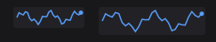
For a chart with axes, a legend, and hover, use plot from nano-ui-diagrams (see Ecosystem Packages).
A settings row:
settingsRow :: Var Bool -> Var Float -> NanoUI ()
settingsRow enabled volume = rowWith (gap 12 . alignMid) $ do
toggleSwitch enabled
labelWith (alignMid . fixedW 64) "Enabled"
knob 0 100 volume
v <- readVar volume
labelWith (alignMid . fontMono . fixedW 48) (T.pack (show (round v :: Int)))
The fixedW on the changing number keeps the controls from shifting. Read the value below the knob so a drag resolves in one pass.
spinner calls keepAnimating internally while it is drawn. Do not add a global keepAnimating; that would keep the loop running when the spinner is not visible.
Implementing custom controls
Each control in NanoUI.Widgets.Custom follows the same steps:
- Take an id with
freshWidget. - Size and draw through a
CustomWidgetSpecandrunCanvasFor. - Turn input into a change of value with
useDrag2DOn,useWheelDeltaOn, anduseKeyNav. - Write the result to the caller’s
VarwithbindVarorfinishInput.
Canvas drawing
canvas sizes a rectangle with a layout modifier and runs a CanvasM drawing in it. The rectangle is the widget’s place in the window, so draw relative to it:
import NanoUI.Path qualified as P
badge :: NanoUI ()
badge = void $ canvas (fixedWH 120 40) $ \r@(Rect x y _ h) -> do
drawRoundedRect r 8 blue
drawStrokePath (P.circle (V2 (x + 20) (y + h / 2)) 8) 2 colorWhite
drawText (V2 (x + 68) (y + h / 2)) AlignCenter AlignMiddle "Ready" colorWhite
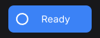
canvas returns the widget’s Response; discard it with void when the drawing needs no hover or clicks. canvasConfigured adds a content key, a cursor, and pointer tracking. For full control, use customWidget with a CustomWidgetSpec:
dot :: Float -> Float -> NanoUI Response
dot angle volume = do
(resp, ()) <- customWidget defaultCustomWidgetSpec
{ widgetLayout = fixedWH 48 48 defaultLayout
, widgetContent = contentKey [angle, volume]
, widgetDraw = \cdc (Rect x y w h) -> runCanvasFor cdc $ do
drawCircle (V2 (x + w / 2) (y + h / 2)) 16 (themeAccent (cdcTheme cdc))
, widgetCursor = Just (\_ _ _ -> UiCursorPointer)
}
pure resp
runCanvasFor adapts tessellation to the display scale inside widgetDraw. drawContext / cdcTheme supply the active theme, font, hover, and press state.
Reading the examples
The rest of this section is compiled from CanvasExamples.hs, and nano-ui-svg-glossary renders the same definitions to the images. Each list pairs a caption with a drawing, and the drawing gets one cell’s rectangle. They share a palette and a helper:
ink, blue, teal, amber, rose :: Color
ink = colorRGB 226 232 240
blue = colorRGB 59 130 246
teal = colorRGB 20 184 166
amber = colorRGB 245 158 11
rose = colorRGB 244 63 94
centre :: Rect -> V2
centre (Rect x y w h) = V2 (x + w / 2) (y + h / 2)
Thin grey lines, small dots, dashed outlines, and the red crosshair in the images are annotations drawn on top. They are not part of the example code.
Rectangles, circles, and gradients
The basic ops take a rectangle or a centre and radius. They need no NanoUI.Path import.
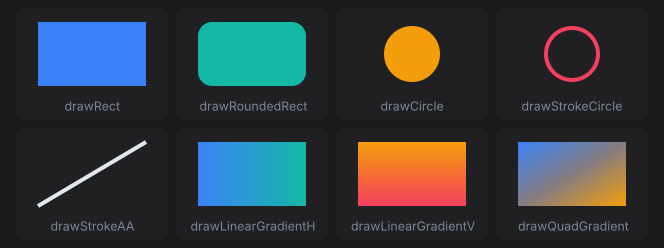
primitives :: [(Text, Rect -> CanvasM ())]
primitives =
[ ("drawRect", \r -> drawRect r blue)
, ("drawRoundedRect", \r -> drawRoundedRect r 14 teal)
, ("drawCircle", \r -> drawCircle (centre r) 28 amber)
, ("drawStrokeCircle", \r -> drawStrokeCircle (centre r) 28 4 rose)
, ("drawStrokeAA", \(Rect x y w h) -> drawStrokeAA (V2 x (y + h)) (V2 (x + w) y) 4 ink)
, ("drawLinearGradientH", \r -> drawLinearGradientH r blue teal)
, ("drawLinearGradientV", \r -> drawLinearGradientV r amber rose)
, ("drawQuadGradient", \r -> drawQuadGradient r blue teal amber rose)
]
drawStrokeCircle keeps its border inside the radius. drawStrokeAA is an anti-aliased line with square ends; drawStroke is the same line without anti-aliasing, for axis-aligned rules. drawQuadGradient takes its colours clockwise from the top left.
Paths
Steps joined with <> build a Path. moveTo starts a subpath. lineTo, quadTo, cubicTo, and arc extend it from the current point, and close draws a line back to where it started. Each path below is stroked with drawStrokePath (path r) 3 blue. Filled dots are points on the path; hollow dots are control points and arc centres.
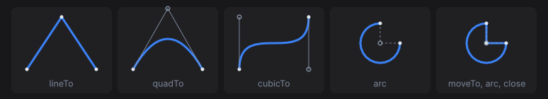
segments :: [(Text, Rect -> P.Path)]
segments =
[ ("lineTo", \(Rect x y w h) ->
P.moveTo (V2 x (y + h)) <> P.lineTo (V2 (x + w / 2) y) <> P.lineTo (V2 (x + w) (y + h)))
, ("quadTo", \(Rect x y w h) ->
P.moveTo (V2 x (y + h)) <> P.quadTo (V2 (x + w / 2) (y - 12)) (V2 (x + w) (y + h)))
, ("cubicTo", \(Rect x y w h) ->
P.moveTo (V2 x (y + h)) <> P.cubicTo (V2 x y) (V2 (x + w) (y + h)) (V2 (x + w) y))
, ("arc", \r -> P.arc (centre r) 28 0 (3 * pi / 2))
, ("moveTo, arc, close", \r -> P.moveTo (centre r) <> P.arc (centre r) 28 0 (3 * pi / 2) <> P.close)
]
Angles are in radians. Because y points down, a positive sweep turns clockwise on screen: the arc starts at 3 o’clock and runs three quarters of the way round. An arc after moveTo joins the current point to its start with a line, which is how the last cell draws a pie slice.
Shape helpers build whole subpaths. They never join onto what comes before them, so <> combines them into one path with several subpaths.
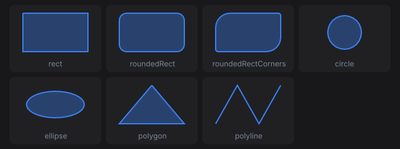
shapes :: [(Text, Rect -> CanvasM ())]
shapes =
[ ("rect", \r -> shape (P.rect r))
, ("roundedRect", \r -> shape (P.roundedRect r 12))
, ("roundedRectCorners", \r -> shape (P.roundedRectCorners r 24 4 24 4))
, ("circle", \r -> shape (P.circle (centre r) 28))
, ("ellipse", \r -> shape (P.ellipse (centre r) (V2 48 22)))
, ("polygon", \(Rect x y w h) -> shape (P.polygon [V2 (x + w / 2) y, V2 (x + w) (y + h), V2 x (y + h)]))
, ("polyline", \(Rect x y w h) ->
drawStrokePath (P.polyline [V2 x (y + h), V2 (x + w / 3) y, V2 (x + 2 * w / 3) (y + h), V2 (x + w) y]) 2 blue)
]
where
shape p = drawPath p (withAlpha blue 0.35) >> drawStrokePath p 2 blue
roundedRectCorners takes its radii in CSS border-radius order: top left, top right, bottom right, bottom left. polygon closes its outline and polyline leaves it open, so the polyline is only stroked here. A fill closes every subpath.
Fill rules
drawPath fills with P.NonZero. drawPathWith takes the rule and a paint. All three cells fill three concentric circles:
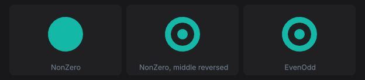
fillRules :: [(Text, Rect -> CanvasM ())]
fillRules =
[ ("NonZero", \r -> drawPathWith P.NonZero (rings r) (P.Solid teal))
, ("NonZero, middle reversed", \r -> drawPathWith P.NonZero (reversedMiddle r) (P.Solid teal))
, ("EvenOdd", \r -> drawPathWith P.EvenOdd (rings r) (P.Solid teal))
]
where
rings r = P.circle (centre r) 30 <> P.circle (centre r) 20 <> P.circle (centre r) 9
-- A negative sweep runs the middle circle anticlockwise.
reversedMiddle r@(Rect x y w h) =
P.circle (centre r) 30
<> P.moveTo (V2 (x + w / 2 + 20) (y + h / 2))
<> P.arc (centre r) 20 0 (-2 * pi)
<> P.close
<> P.circle (centre r) 9
P.circle always runs clockwise, so under NonZero the inner circles add to the outer one and the disc is solid. Running the middle circle the other way cancels it out, cutting a hole. EvenOdd ignores direction: each nested subpath toggles between filled and empty. Crossing subpaths are not resolved against each other, so keep holes inside the shape they cut.
Paints
P.Solid fills with one colour. P.Linear from to stops blends a gradient along the line from from (offset 0) to to (offset 1).
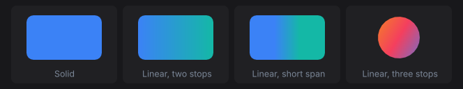
paints :: [(Text, Rect -> CanvasM ())]
paints =
[ ("Solid", \r -> drawPathWith P.NonZero (P.roundedRect r 10) (P.Solid blue))
, ("Linear, two stops", \r@(Rect x y w _) ->
drawPathWith P.NonZero (P.roundedRect r 10) (P.Linear (V2 x y) (V2 (x + w) y) [(0, blue), (1, teal)]))
, ("Linear, short span", \r@(Rect x y w _) ->
drawPathWith P.NonZero (P.roundedRect r 10) (P.Linear (V2 (x + w / 3) y) (V2 (x + 2 * w / 3) y) [(0, blue), (1, teal)]))
, ("Linear, three stops", \r@(Rect x y w h) ->
drawPathWith P.NonZero (P.circle (centre r) 30) (P.Linear (V2 x y) (V2 (x + w) (y + h)) [(0, amber), (0.5, rose), (1, blue)]))
]
Past the first and last stop the gradient keeps their colours, which the short span shows. Strokes take a Paint too, so a gradient can run along an outline.
Strokes
drawStrokePathWith takes a P.Stroke. Start from P.stroke width (butt caps, miter joins, solid) and override fields with record update. Strokes are centred on the path.
Caps finish the ends of open subpaths and of every dash. The thin line is the path; butt caps stop at its end points, round and square caps extend past them by half the width.
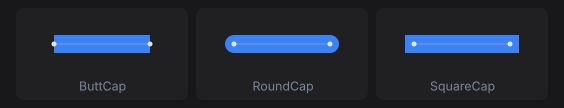
capLine :: Rect -> P.Path
capLine (Rect x y w h) = P.moveTo (V2 (x + 16) (y + h / 2)) <> P.lineTo (V2 (x + w - 16) (y + h / 2))
caps :: [(Text, Rect -> CanvasM ())]
caps =
[ (name, \r -> drawStrokePathWith (P.stroke 18) {P.strokeCap = cap} (capLine r) (P.Solid blue))
| (name, cap) <- [("ButtCap", P.ButtCap), ("RoundCap", P.RoundCap), ("SquareCap", P.SquareCap)]
]
Joins shape the corners between segments. A miter longer than strokeMiterLimit times the width falls back to a bevel, which the last cell forces with a limit of 1.5.
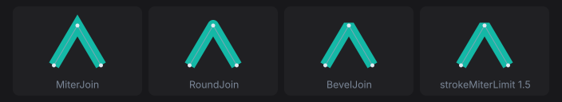
zigzag :: Rect -> P.Path
zigzag (Rect x y w h) = P.polyline [V2 (x + w / 4) (y + h - 4), V2 (x + w / 2) (y + 10), V2 (x + 3 * w / 4) (y + h - 4)]
joins :: [(Text, Rect -> CanvasM ())]
joins =
[ ("MiterJoin", withJoin (P.stroke 14) {P.strokeJoin = P.MiterJoin})
, ("RoundJoin", withJoin (P.stroke 14) {P.strokeJoin = P.RoundJoin})
, ("BevelJoin", withJoin (P.stroke 14) {P.strokeJoin = P.BevelJoin})
, ("strokeMiterLimit 1.5", withJoin (P.stroke 14) {P.strokeJoin = P.MiterJoin, P.strokeMiterLimit = 1.5})
]
where
withJoin st r = drawStrokePathWith st (zigzag r) (P.Solid teal)
strokeDash lists alternating dash and gap lengths, repeated along each subpath. strokeDashOffset starts the pattern part of the way in. A zero-length dash with round caps draws a dot.
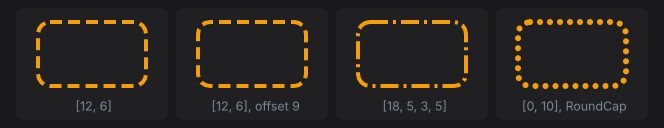
dashes :: [(Text, Rect -> CanvasM ())]
dashes =
[ ("[12, 6]", dashed (P.stroke 4) {P.strokeDash = [12, 6]})
, ("[12, 6], offset 9", dashed (P.stroke 4) {P.strokeDash = [12, 6], P.strokeDashOffset = 9})
, ("[18, 5, 3, 5]", dashed (P.stroke 4) {P.strokeDash = [18, 5, 3, 5]})
, ("[0, 10], RoundCap", dashed (P.stroke 6) {P.strokeDash = [0, 10], P.strokeCap = P.RoundCap})
]
where
dashed st r = drawStrokePathWith st (P.roundedRect r 12) (P.Solid amber)
Transforms
withTransform draws a block through a P.Transform. Transforms compose with <>, and the right-hand one applies first. The dashed outline is the arrow before the transform.
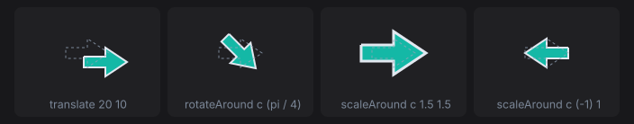
arrowPath :: Rect -> P.Path
arrowPath r =
let V2 cx cy = centre r
in P.polygon [V2 (cx - 24) (cy - 6), V2 cx (cy - 6), V2 cx (cy - 16), V2 (cx + 24) cy, V2 cx (cy + 16), V2 cx (cy + 6), V2 (cx - 24) (cy + 6)]
arrow :: Rect -> CanvasM ()
arrow r = drawPath (arrowPath r) teal >> drawStrokePath (arrowPath r) 2 ink
-- | Scale about a point: move it to the origin, scale, move it back.
scaleAround :: V2 -> Float -> Float -> P.Transform
scaleAround (V2 cx cy) sx sy = P.translate cx cy <> P.scale sx sy <> P.translate (-cx) (-cy)
transforms :: [(Text, Rect -> CanvasM ())]
transforms =
[ ("translate 20 10", \r -> withTransform (P.translate 20 10) (arrow r))
, ("rotateAround c (pi / 4)", \r -> withTransform (P.rotateAround (centre r) (pi / 4)) (arrow r))
, ("scaleAround c 1.5 1.5", \r -> withTransform (scaleAround (centre r) 1.5 1.5) (arrow r))
, ("scaleAround c (-1) 1", \r -> withTransform (scaleAround (centre r) (-1) 1) (arrow r))
]
P.rotate and P.scale work about the window origin, not the widget. Move the pivot to the origin first: P.rotateAround does that for rotation, and scaleAround above does it for scale. Stroke widths and dashes scale with the transform, so the enlarged arrow’s outline is thicker. Text moves its anchor and scales, but glyphs do not rotate.
Clipping
withClip rect clips a block to rect, intersected with the current clip. The current clip is at most the widget’s rectangle, so a canvas never draws outside its own bounds.
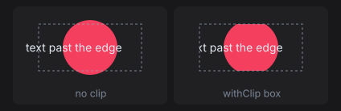
clipped :: Rect -> CanvasM ()
clipped r@(Rect x y _ h) = do
drawCircle (centre r) 34 rose
drawText (V2 (x - 6) (y + h / 2)) AlignStart AlignMiddle "text past the edge" ink
clipBox :: Rect -> Rect
clipBox (Rect x y w h) = Rect (x + 10) (y + 8) (w - 20) (h - 16)
clips :: [(Text, Rect -> CanvasM ())]
clips =
[ ("no clip", clipped)
, ("withClip box", \r -> withClip (clipBox r) (clipped r))
]
Text
drawText pos alignX alignY txt colour anchors text to a point. The alignment says which part of the text sits on the point (the red dot): AlignStart puts the point at the left edge, AlignTop at the top of the line, AlignBaseline on the baseline. drawTextWith takes a TextFont for size, variant, weight, and slant.
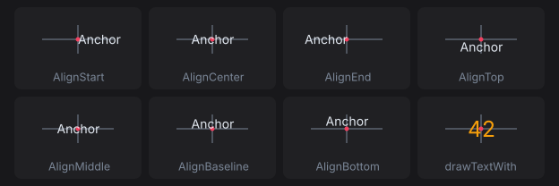
textAnchors :: [(Text, Rect -> CanvasM ())]
textAnchors =
[ (name, \r -> drawText (centre r) ax AlignMiddle "Anchor" ink)
| (name, ax) <- [("AlignStart", AlignStart), ("AlignCenter", AlignCenter), ("AlignEnd", AlignEnd)]
]
<> [ (name, \r -> drawText (centre r) AlignCenter ay "Anchor" ink)
| (name, ay) <- [("AlignTop", AlignTop), ("AlignMiddle", AlignMiddle), ("AlignBaseline", AlignBaseline), ("AlignBottom", AlignBottom)]
]
<> [ ("drawTextWith", \r ->
drawTextWith defaultTextFont {textFontSize = 24, textFontWeight = WeightBold} (centre r) AlignCenter AlignMiddle "42" amber)
]
Measure text with lineWidth and uiFontMetrics. Measure a whole run with lineWidth rather than adding per-glyph advances, because a shaping backend lays runs out by unrounded advances.
Borders: inset or centred
drawStrokeRoundedRect keeps its border inside the rectangle. A path stroke is centred on the path, so half its width falls outside. The thin outline is the rectangle both cells were given.
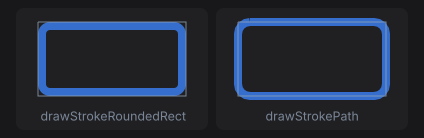
borders :: [(Text, Rect -> CanvasM ())]
borders =
[ ("drawStrokeRoundedRect", \r -> drawStrokeRoundedRect r 12 8 (withAlpha blue 0.8))
, ("drawStrokePath", \r -> drawStrokePath (P.roundedRect r 12) 8 (withAlpha blue 0.8))
]
Use the inset form for a widget’s own border, so it never paints past the widget’s rectangle.
Content keys and caching
Without widgetContent, a custom widget’s draw ops are rebuilt and diffed every frame. With a key, unchanged frames skip rebuild and repaint, but the key must cover everything the drawing reads:
gauge :: Float -> Float -> Float -> NanoUI Response
gauge angle volume scrollY = do
(resp, ()) <- customWidget defaultCustomWidgetSpec
{ widgetLayout = fixedWH 48 48 defaultLayout
, widgetContent = contentKey [angle, volume, fromIntegral (round scrollY :: Int)]
, widgetDraw = \cdc rect -> runCanvasFor cdc (drawGauge rect)
}
pure resp
A key that misses an input shows stale pixels. See Styling Gotchas.
A drawing whose layout rectangle never changes (a drag ghost pinned under the pointer with pinAt) gets no layout change when it moves. Give it an explicit version that includes what moves it:
-- ghostOps :: Rect -> SmallArray DrawOp
dragGhost :: Float -> Float -> NanoUI Response
dragGhost mx my = drawingVersioned (contentKey [mx, my]) (fixedWH 32 32) ghostOps
Otherwise it keeps the ops of the frame it first appeared in.
SVG
parseSvg reads SVG text and loadSvg reads a file. An icon that strokes or fills with currentColor takes the text colour, so fontColor and the semantic styles tint it; other colours are kept.
icons :: Svg -> Color -> NanoUI ()
icons star accent = do
svgIcon 24 star
svgIconWith (fixedWH 32 32 . fontColor accent) star
whenM (iconButton star "Star") starItem
svgIconConfigured takes an ImageConfig for CSS-style fitting (FitContain, FitCover, FitFill).
Inside a canvas, rasterize the SVG with rasterizeSvg from NanoUI.Svg, lease the pixels with useImageRgba, and draw the image. Key the lease on everything the pixels depend on, here the tint:
starBadge :: ImageHandle Color -> Svg -> Color -> NanoUI Response
starBadge owner star tint = do
iid <- useImageRgba owner tint 32 32 (rasterizeSvg 32 32 tint star)
canvas (fixedWH 140 44) $ \(Rect x y _ _) ->
for_ iid $ \i -> drawImage (Rect (x + 8) (y + 6) 32 32) i colorWhite
nano-ui-svg goes the other way and exports draw ops as SVG; see SVG export.